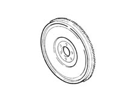
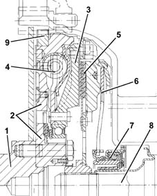

1024B engine flywheel
- Path
- Descriptions > 10 ENGINE UNIT > 1024 CRANKSHAFT AND FLYWHEEL > 1024B engine flywheel
- Kind
- system description
- Applies to
- all engines; all production periods
- Interactive page
- https://sloeber94.github.io/elrnDB-fMltpl/en/#/2888219
Applies to: engines: 1.6 16v; all production periods
Made from cast iron with a steel ring gear, it is balanced and designed to reduce the resonances caused by the engine.

Applies to: engines: 1.9 JTD 8V; all production periods
In the twin mass DVA (twin shock absorber flywheel) system, one is fixed to the crankshaft and one to the gearbox main shaft with a flexible damping system in between.
The resonance points which, in traditional systems, are located at 800 and 2200 rpm, have been moved towards lower rotation speeds, outside of the usage range.
The clutch engagement, positioned between the twin flywheel and the gearbox, is made up of a rigid disc (without springs) which, on account of reduced inertia, improves the manoeuvrability of the gearbox.

1, Crankshaft 2, Mass fixed to the crankshaft 3, Mass fixed to the gearbox main shaft 4, Flexible damping system 5, Clutch disc 6, Flexible coupling spring 7, Thrust bearing 8, Gearbox main shaft 9, Ring gear
TECHNICAL ADVANTAGES
The use of the twin shock absorber flywheel instead of a normal flywheel provides the following advantages:
- damping the engine irregularities transmitted to the gearbox with a consequent decrease in level of transmission noise;
- reduction of the rumbling noise in the car interior, as the D.V.A. makes it possible to shift the frequency generated by the transmission below the frequency corresponding to the engine idle speed, attenuating the total noise;
- reduction of the inertia to be synchronized on the gearbox main shaft, as the clutch disc is lighter, being rigid.